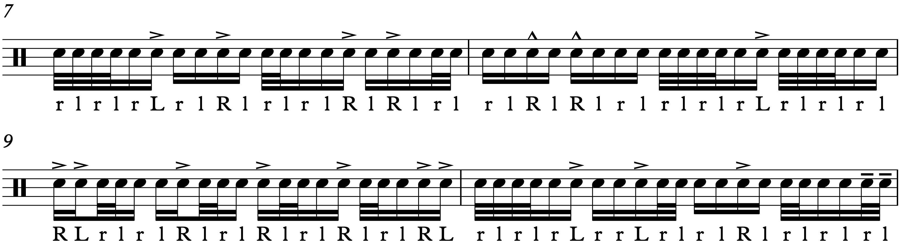

Unpopular Opinions

So, a few weeks ago, someone on r/drums started a thread basically asking about unpopular drum opinions. I couldn’t help myself, and I left quite a lengthy comment, since I find myself disagreeing with most of what happens on the internet with regards to drumming.
My comment ended up being at the top of the thread, becoming the most popular thing I’ve ever done on the site, with a whopping 29 upvotes. Yay me! I stand by everything I wrote, but I want to take the chance to add more thoughts to the many different topics I brought up. Without further ado…
Whiplash is a terrible movie.
Yup. You can read my thoughts on it here. I’ve already spent too much time thinking about Whiplash than the movie even deserves, so let’s move on.
Drum covers bore me to tears.
I’ve never cared for them, yet they seem inescapable. And I get it; covers have been a reliable way to get noticed for years. I’m just never interested in them, and it doesn’t help that ~70% of the stuff I see on internet drumming circles involves drum covers. Whenever I see someone playing along to an artist like Plini, I always find myself wanting to watch the actual drummers playing those songs. Most drummers play the drum parts wrong on their covers anyway.
Most drum sheet music out there is crap.
If it’s not outright inaccurate, it’s horribly engraved. One of the reasons why I’m determined to keep my transcriptions free is because I want to be part of the solution to this problem.
Drumeo has more bad videos than good.
I don’t want to sound like a Drumeo hater, since I do admire what Jared & Co. have built the website into… but there’s still a lot of junk on there. The in-house videos are all over the place: some are fascinating, other are pointless, and far too many just spew out utter nonsense. Most commonly, they often seem to struggle with deciding who their audience is supposed to be, as well as connecting and reaching their viewers.
Meanwhile, the guests they have on are similar — the guys on there like David Garibaldi or Tommy Igoe have made some of the best videos on the site, since they’re actual educators. But Drumeo has learned the hard way that good drummer ≠ good teacher. Much of the advice from the other players can be questionable and they tend to contradict one another when compared. They had one guy on who confused German grip with French grip and proceeded to bash the French grip by declaring it useless (and all the while he kept calling it a German grip, with no response from the interviewer). I stopped the video immediately after that debacle.
YouTube in general has more bad drum videos than good.
Pretty much every drumming video ever made can be boiled down to: day–one drum lessons; covers; bad music theory; how to rip off another drummer and sound like a copycat; or ridiculous philosophizing. The only channel I regularly keep up with is SoundsLikeADrum.
Most drummers confuse terms like metric modulation, polyrhythm, polymeter, and syncopation without knowing what they actually mean.
Something else I’ve brought up before. I think drummers these days just want to appear cool and hip, so they remain eager to throw technical phrases over whatever they’re playing. “Metric Modulation” in particular seems to have taken over the internet; for some reason, there’s currently an obsession with vomiting over Tears For Fears’ “Everybody Wants To Rule The World” with increasingly convoluted and unmusical syncopations. But if you call it a “metric modulation”, the crowd goes wild… I expect to write more about this in the future. In the meantime, watch this awful trend reach a fever pitch.
Practicing rudiments over and over with a metronome is a waste of time. Unless you’re solely going for speed, get a rudiment book.
This one really bugs me, because it’s almost always the default answer online for when someone asks “how do I learn the rudiments?”. I guess the thinking is to threat it like you would muscle memory in a sport, but we’re playing music here, not making split–second reactions. I wouldn’t say it’s totally useless, and it is indeed good for speed… but you can save a lot of time by getting a rudiment book. My favorite is The Savage Rudimental Workshop by Matt Savage.
I’ve never really been inspired by Buddy Rich’s playing.
See yet another earlier post. Nothing more to add here really.
Overplaying is a problem that no drummers want to talk about.
Getting on Reddit or YouTube or Instagram or whatever to show off is fun and all, but not many people like to talk about what will actually get you the gig. I’ll tell you what, it’s not most of the stuff you see on the internet. It’s one thing when the drummer just doesn’t vibe with the rest of the band. It’s something else for a player to not know when they need to rein it in, and too often I see drummers that make me want to grab them and say “chill out!”. As Steve Gadd apocryphally said, “Fills bring the thrills, but grooves pay the bills”.
Writing drum set notation with two voices is an ugly waste of space and should be avoided at all costs.
If you don’t know what I’m talking about, read this. I only bring this up because I see it way too often. I’m not a professional engraver and I’ve seen this used in professionally published sheet music, but I can’t figure out why. The article I linked tries to make the case that different music calls for different approaches, but I’ve never been confused by reading only a single voice. Save it for polyrhythms; otherwise your notation will be a 10+ page web of rests and cluttered beams.
Drums don’t play actual pitches.
This is a surprisingly controversial take. I’m no acoustician, but my understanding is that, when an instrument plays a note, the pitch comes from the fundamental frequency (i.e. the lowest frequency heard). What gives an instrument its timbre (a.k.a. its unique sound) comes from the overtones — frequencies that ring out higher than the fundamental. Pitched instruments in particular have overtones that follow the harmonic series: simple integer multiples of the fundamental. The volume of these harmonics and even slight deviations from them (in a mathematical sense) will contribute to an instrument’s sound.
Drums have a fundamental as well as overtones, but percussion instruments in general are said to be inharmonic because their overtones do not follow the harmonic series; instead of simple multiples, these overtones are quite complicated, and essentially burry the fundamental so it can’t really be heard as a pitch. Certain drums like timpani do have overtones that follow the harmonic series. Your toms don’t.
Many drummers tune their drums to “notes”; as in, they stick their phone on top of a drum as a tuner app tries to fish out a fundamental. And many drummers have gotten good results. But I think the results have more to do with good tuning practice overall, like choosing the right heads, proper tensioning (i.e. even tension across the head), good miking, and good mixing. I’ll put it to you this way: I have never read, heard, or seen anything to suggest that John Bonham ever spent a minute tuning his drums to pitches. Why should you?
Many rudiments are useless on the drum set.
I can safely say this, having spent time with several rudiment books. Out of the 40 rudiments, I use probably ~10 on a regular basis. This really shouldn’t be surprising, since the drum set as we know it today barely existed when the modern rudiments took their shape. Think about it yourself: when was the last time you played a lesson 25 on the drum set?
The six stroke roll you know and love isn’t actually a six stroke roll.
I don’t know how/when this happened, since the short rolls are supposed to use a simple system. If you get out your rudiment sheet, you’ll see that all the short rolls have doubles that are twice as fast as accented singles. But for some reason, people ignore this rule for the six stroke roll exclusively, typically playing all the notes as even triplets. It may have been started by jazzers, and I haven’t really found I name that I want to call this interpretation... but I can tell you that it will never be a “six stroke roll”.
If you’re a drum set player worried about doing stick tricks, don’t be. Leave them for the drumlines.
I’m happy that this fad came and went pretty quickly a few years ago, although its existence is documented on Drumeo (of course). I brought this up to some extent on my Buddy Rich rant. My favorite drummers are first and foremost musicians. If you get called into the studio and start twirling your sticks, the producer will be looking for another drummer.
I can’t recommend practicing on pillows or with big marching sticks (unless you actually want to play those things).
Another controversial opinion. Many drummers, like Dennis Chambers, swear by practicing on pillows. But there are some confounds here. Dennis has been playing professionally for years, and I’d reckon all that playing on his drums has done more for his chops than using pillows has. Most pros gig more than they practice.
Bottom line, the best practicing you will ever do will be on the drum set. I wouldn’t use a practice pad if I didn’t have to. The same applies to using big marching sticks; many drummers use them like ankle weights to build strength. When I did my first year on a drumline, I spent a lot of time playing with big tenor sticks. When I finally got back on the drum set to play with my 5Bs, everything felt wrong. Heavier sticks require more energy to swing, but more energy into the head gives you more rebound. I basically lost the feel of my drum set sticks. The tenor sticks did me no favors on the kit.
I’m not a fan at all of sheet music that uses upper case and lower case stickings for accents and taps. I can read the accents on their own just fine!
I’m talking about this:
Why in the name of Ringo did this catch on? Why?! Who finds this helpful?!
If you must to do this, there are better typographical methods. For example, using bold text for accents, or perhaps a larger text size. The best way is probably using a small caps font — a true small caps font mind you. That way you can capitalize accented notes as normal, they’ll just look much better.
⁂
Well, that about covers all I had to say my responses to my own comment thread. I didn’t reply to other comment threads, since that would be truly insufferable… but hey, I’ll do it on my website! So, let’s see what other people had to say, and what I feel like responding to:
Stacks are shit
Well that’s a bit harsh. I’ve never taken personal offensive to cymbal stacks — they can produce some very unique sounds, although they can also smear together with little personality, and many metal drummers are eager to make them a part of their setup without really knowing how to use them.
If you don’t hit your splash(es) hard you are living your life wrong.
I’ve never really considered splashes to require a certain dynamic to sound good. Do people wail on their splashes? If there’s any cymbal I’m the most worried about cracking, it’s my splash.
Metal drumming is boring.
Many other users replied to the effect of “you’re listening to the wrong metal”. I agree.
Dynamics are the most important part of sounding good as a drummer.
An important part for sure. The most important part? Eh… nailing your pianissimo or your sforzando won’t sound very good if you don’t play musical grooves/fills that serve the song. Many songwriters use dynamics as a one–trick pony to make their music sound interesting. Don’t be that kind of drummer.
Evans and Aquarian have far more superior technical advantages and variety than Remo.
I’m not really sure how to quantify this. “Superior technical advantages”? The mechanics of the drumhead are not very complicated. In my experience, certain drums just seem to work better paired when with certain heads. For instance, I would never put anything on a Ludwig drum that’s not a Remo coated Emperor or a coated Ambassador, save for maybe kick drums. My Pearl set seems to like Remo the most, and I’ve noticed the same for Yamaha. Tama, Sonor, and Gretsch appear to work well with both Remo and Evans, while DW players always look like they go for Aquarian heads.
Drumeo is fantastic and the people who hate on it have never actually looked into their website, or appreciate all of the professionals that they bring to their YouTube channel. It's successful for a reason.
Like I mentioned earlier, many of the “professionals” on Drumeo just don’t know what they’re talking about. I didn’t really notice Drumeo until 2015, when I had been playing for 10 years. It might good for total newbs, but I’m not convinced the site is a substitute for proper one-on-one instruction. Nothing will change the abundance of videos that are just bad — they relish in gimmicks far too often.
Too many drummers overthink tuning.
Fair point. If your drums sound good in your situation, just roll with it. However, it’s an intimidating process, since there’s no objective way for a drum to be “in tune”. It’s really about experimenting, and there are a lot of variables. Drummers also tend to be insecure about the sound of their kit, since they assume it will reveal something about their knowledge and expertise of the instrument. I think every drummer’s worst nightmare is to play for a sound engineer who cuts them off and goes “um… yeah your drums need to stop doing that”.
Singles and doubles are the only important rudiments. Everything else can be accomplished rather simply once those 2 are properly learned with extensive practice time.
I’ve seen this brought up elsewhere around the internet. I have a few problems with the sentiment. First, it seems to outright ignore flams and drags, which require very different execution than singles and doubles. Also throw in articulations as well. I guess that gets to the second point: this thinking is correct in the abstract, but you still need to focus on stringing it all together. You break things down to build them back up. I’ve seen other responses to the effect of “you wouldn’t study the letters of the alphabet in isolation to become a skilled writer”.
Casey Cooper is hated on way too much. People that hate on him are obviously jealous. He is living proof that you don't need outstanding chops to be a major influence. Look at Ringo, for example.
I wouldn’t ever hate on Casey Cooper, he just hasn’t posted a single thing to his channel that I find remotely interesting. Well, maybe he has, I haven’t checked in on him in about five years, and I’m not going to. But people like what he does, and that’s fine. I do remember being legitimately concerned by his technique, wincing at his arms flailing about and cringing at the thought of new drummers watching him and thinking that hairline fractures are the sign that you’re doing it right.
The “more cowbell” joke is not funny anymore. and it needs to stop showing up in comments.
Well, I’ll just say that “more cowbell” jokes are 1000 time more tolerable than every jackass on YouTube who thinks they’re Jerry Seinfeld by going to a video about drumming or jazz and commenting “not my tempo”. Speaking of that...
People say Whiplash is bad because they don't take the time to think that it's meant to dramatize the idea of jazz into the attitude seen in most sports films, and is simply for the audience's entertainment with clever casting.
Hmmm… no. TL;DR — bad characters, a dull plot, and flatulent filmmaking make for one dumb movie.
You cannot overplay your own band's material.
Interesting perspective… obviously there’s no objectively “bad” musical taste, but this line of thinking seems to come from the idea that you can only quantify “overplaying” in the context of a drum part that’s already been laid down, and I disagree. In fact, this poster seems to prove my point with another comment, writing “if you literally fill every bar, that's definitely overplaying”. There you have it!
Electric drum sets are unappreciated far too often. It's to the point where beginners who can only play in quieter scenarios are put off on the dream of drumming forever.
When taken in consideration with the fact the nobody in this godforsaken country can afford to buy a house, then yes, electric kits are a godsend.
20" bass drums are the most versatile.
Twenty inch kicks are seen to be a happy medium between 22 and 18 inch drums (ignoring the 24 inch monsters out there). But with the right heads, tuning, and dampening, you can get any sound you want from a kick that’s in the 18 to 22 inch range.
You CAN play melodies on drums. If it has tone potential, you can play a melody. Drums not only boom, they sing.
Look, a drum is not harmonic just because it happens to ring out more than a coffee table. As one more point, I’ve never seen actual sheet music that instructed me to tune my drums to a specific note(s). Concert band, jazz band, drumline, what have you… no composer has ever specified tuning out of a fear that the drums will sound dissonant with the rest of the ensemble. I’m sure there are some composers who think it matters. But most don’t. Because it doesn’t.
Dave Grohl is not nearly as good as people say he is (love the guy tho).
Will he change your life? I dunno, maybe. He’s still a fun drummer/musician to listen to.
Drum triggers sound like dogshit.
I’m not sure what the appeal of drum triggers are, unless you really can’t work with mics and don’t want to use an electric kit. Otherwise they have a very dated and clunky sound.
I've never listened to Bonham's playing in-depth and I don't know if I ever will. I'll probably do it at some point, but it's not on my immediate to do list.
Ever since this thread, I’ve been seeing a rise in posts on r/drums asking about what made Bonham so great. If you want a Zeppelin introduction, go listen to Mothership. If you don’t want to listen to the entire discography after that album, the band probably isn’t for you. Here’s something I had to say about Bonham from another thread:
I guess if you throw on some Led Zeppelin for the first time and expect to see into another universe you’re probably going to be disappointed, but that could happen to any drummer that has a reputation. I think a lot of John Bonham‘s praise snowballs because he’s probably one of the most famous “drummy” drummers out there and was part of one of the biggest bands in history.
I didn’t really give Zeppelin a proper listen until I had been playing for about eight years... and I loved almost all of their songs. For me it’s less about his drumming and more about his music. Bonham could show restraint but he was also a risk–taker; he walked a line I’m not sure any other player could. The guy’s a really fun drummer to listen to and most of the planet agrees. Isn’t that good enough?
Buddy rich was an asshole who, while being an excellent player, and inspiring many people to pick up the sticks, is mostly famous for his appearances on the Tonight Show, and didn't do much to contribute to jazz as a medium.
Pretty much agree with everything here. I would never call him a bad drummer. His playing is just kind of “there” most of the time.
Too many people overthink tuning. Tune in a star pattern, make sure each lug is in tune with itself. Does it sound good to you when you hit it? Well then you're done.
The only thing I have to say about this is: don’t do the star pattern. Use two keys opposite to each other, and start with small turns — there’s a much lower chance of a rod going finger tight on you for no apparent reason.
The majority of drummers out there can't make the grooves they're hired to play 95% of the time feel good. They focus far too much time on the 5% that gets attention from other drummers and musicians.
Perhaps one of the worst things the internet has done for drumming. If you want to play for other drummers, do it sparingly.
Nylon>wood
Oh no no no. I used nylon back in my Sabian B8 era, but these days nylon sticks just sound too abrasive on cymbals. They also mess with the sound of your drums and I’ve always found that heads will dent much easier when played with nylon tips. But they do last longer, and many marching tenor players love nylon tips.
This was brought up a few times in the thread. Another users shared “I bought wood topped drumsticks for the first time a couple years ago and it sounded awful. Granted, my ride cymbal already kinda sucks—” stop right there, that’s your problem!
Remo makes dogshit heads
No.
Take that stupid wallet off your snare you pretentious hippie.
Well! The wallet trick is a funny way to dampen your drums, but I think there are more useful methods.
High-hats played with the tip of a drum stick have no drive behind a song
Here’s a reminder of how the “Rosanna” shuffle was played.
I have no idea how Charlie Watts made a career in drumming
???
Maybe he sold 200+ million records because he’s a good drummer…
Vintage kits are not better than newer state of the art setups.
I don’t really get the appeal of vintage kits. There can be a cool bit of history with them, but they're also prehistoric in many ways. Whatever, I would still love to see how a Supraphonic from the 1960’s plays.
I'm all for kits with a lot of cymbals, but having more than 2 of any kind is pointless, and the same goes for rack and floor toms. There just isn't enough of a difference in sound at that point for them to serve any purpose beyond looking cool
There are definitely some drummers who don’t know how to use more than two toms on a kit... but if you listen to players like Steve Gadd or perhaps Matt Garstka, you’ll find that there are licks that can only really be done justice with four or six toms. Cymbals may tend to blend together, but with the right setup and mic placement, extra cymbals can go a long way to enhace the stereo image of your drums.
Quintuplets and septuplets have no practical application and people practice them just to show off to other drummers.
Excuse me, but I love quintuplets. 16th note quintuplets are a great way to dish out fast subdivisions on songs that are too quick for 16th note triplets. They also swing quite well, making them a useful changeup on songs with a triplet feel. Entire songs have been written with the subdivision. I don’t think septuplets are as versatile, but I also haven’t explored them to the same extent.
Timbale sticks work better on set than standard drum sticks.
Maybe on for snare drum rimshots, but the whole point of the tip is to help with cymbal articulations. Playing “butt out” has always made cymbals sound clumsy to me.
If you tune your drums low, then you may as well be attaching your heads to trash cans (though lp beat you to it)
wat
Drum heads were made to be SEATED.
…wat?
It’s possible that the poster is talking about taking a new head and stretching it out before you tune it up. I really don’t think that’s necessary these days. As another drummer on the internet wrote, “Modern heads seat properly without issue. It’s 2019, stop using the coping methods of 1972 to deal with poor manufacturing.”
Sight reading is useless 99% of the time. If a drummer can't play by ear they are useless.
It’s always tough to decide what you want to put the time into learning. Across all instruments, sight reading is a skill you probably won’t need very often. There just aren’t many working gigs where you need to read well on the fly. Of course, if you do get one of these gigs and your reading is rusty, you're gonna have a bad time.
Overly large kits and overly minimalistic kits are equally stupid.
I wonder where the happy medium is. Does an equation exists to help a drummer get there?
And finally. Drumming is extremely white washed. A lot all of the major innovations in popular music, and drumming, were done first by black musicians. If you are a drummer and you are unaware of funk, jazz, blues, and other black innovated styles, and only know "rock" drumming then you don't really know rock drumming.
Probably one of the most important takes of the entire post, and it’s quite a ways down the thread. This isn’t unique to drumming; Adam Neely shared a video this past September where he spoke at length about how collegiate music theory tends to be a discussion of what a handful of European musicians were doing in the 1700’s, and that’s it. Meanwhile in drumland, Bernard Purdie may be the only black drummer that many of the younger players these days know about.
The story of the drums set is the the story of black Americans. But once you learn that, then what? It’s great to become mindful of the history of this instrument, but simply calling it a day afterward has left me feeling increasingly… unsatisfied. And yet, what do you do? What do I do? What do I do as a white guy playing the music of black America? I don’t really have an answer, and it’s not helped by the fact that no drummers ever talk about this.
Double bass pedals are barely noticeable and needlessly expensive
“Barely noticeable” is just not the right way to put it.
Toms are unneeded
This is buried at the bottom of the thread, with -1 votes and no responses. The only drummer I really know of (off the top of my head at least) who tried this is Brad Wilk from Rage Against The Machine, but even he rolled with a two tom setup for major live shows.
Sometimes restricting yourself creatively can open the door to new ideas. Think of how you would approach a song if you had to play on kick, snare, and ride only. As adventurous as that may be, is anything really unnecessary? I’ve seen drummers with three ride cymbals, and all I end up caring about it if they can still play the kit well. I have two toms on my studio kit, but I will cram as many cymbals on the set as I can!
⁂
Well, I think that’s all for now. It may not have been entirely productive to write this much about the opinions of random internet drummers. But hey, my website, my rules!
Posted on February 7, 2021
Tags: 2021 • Rants & Raves